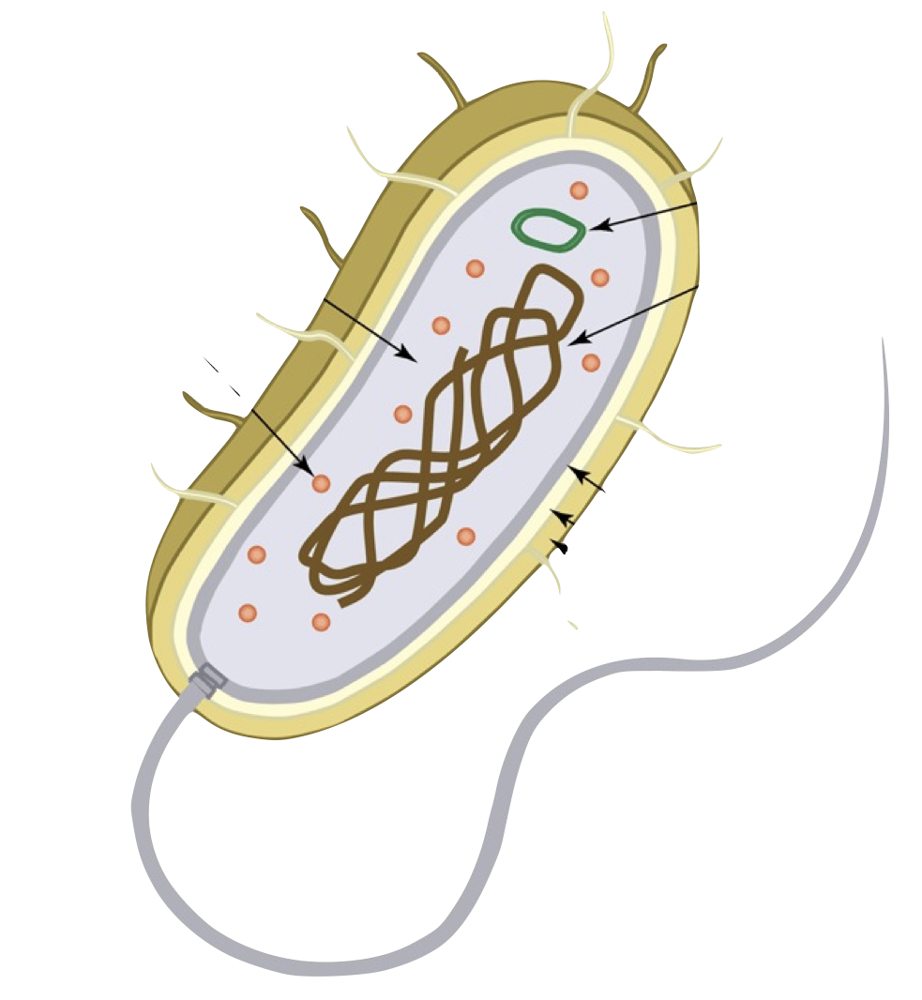
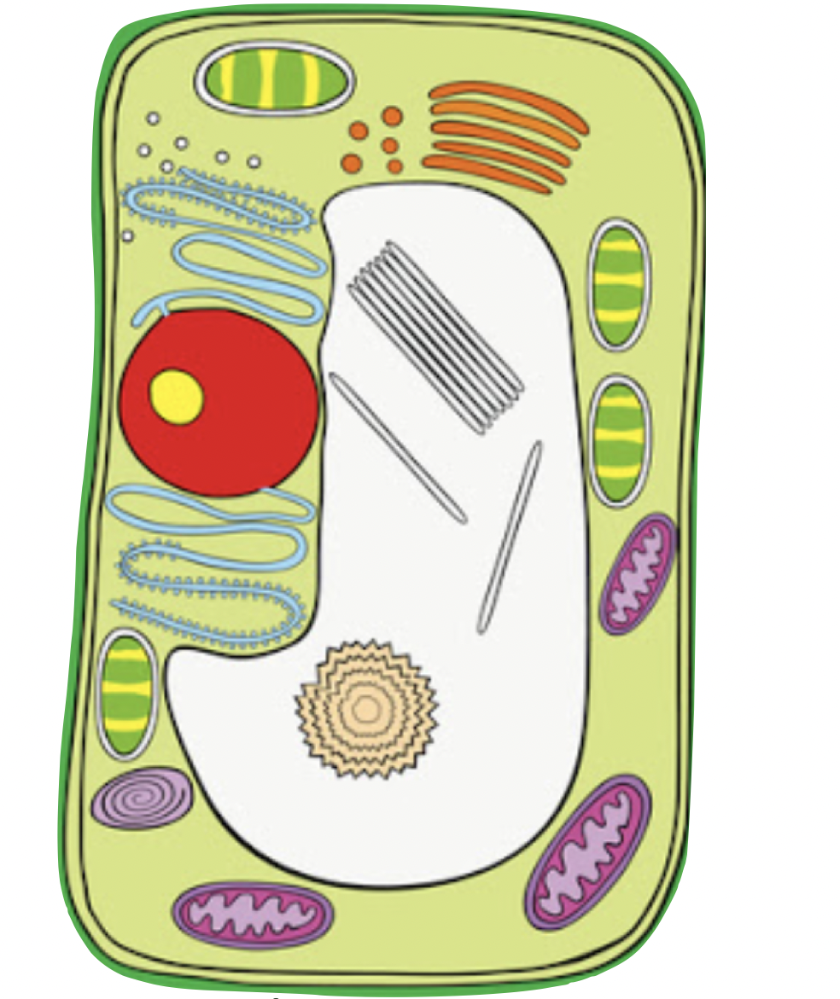
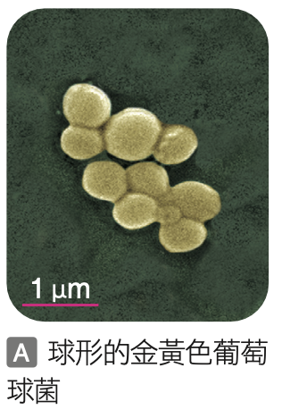
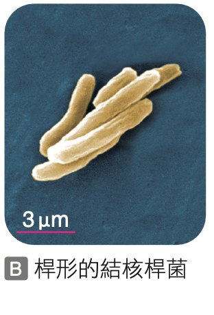
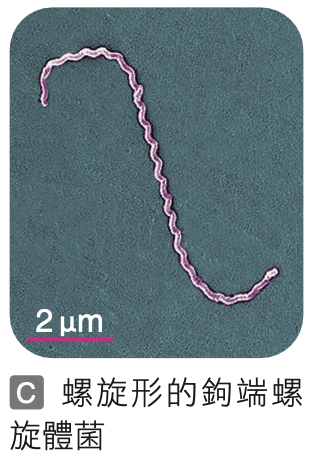
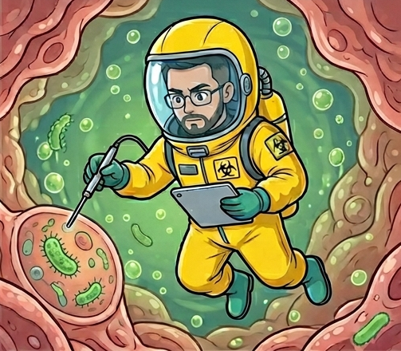
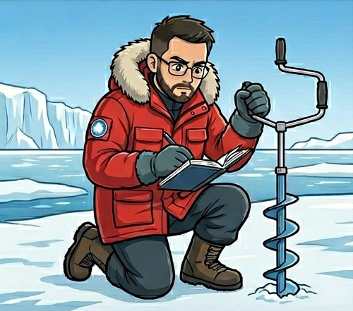

最古老的生命：原核生物
原核生物是地球上目前已知最早出現的生物。在五界的生物之中，原核生物的構造最簡單，遺傳物質散布在細胞質中，並且沒有核膜包圍形成細胞核，因此稱為「原核生物」。
擁有的基本構造
- ✔️ 細胞膜
- ✔️ 細胞質
- ✔️ 遺傳物質 (散布在細胞質)

缺乏的複雜構造
- ❌ 細胞核 (無核膜)
- ❌ 粒線體
- ❌ 葉綠體
記憶吐司測驗 1
Q1-1：請選出哪一種細胞屬於「原核生物」的細胞？

Q1-2：太棒了！那為什麼選擇這張圖呢？
Q2：原核生物具有下列哪些構造呢？（多選題）
正確說明：
原核生物是最簡單的細胞，它們有細胞膜、細胞質和遺傳物質，但是沒有細胞核，也沒有粒線體、葉綠體等複雜的胞器喔！
原核生物是最簡單的細胞，它們有細胞膜、細胞質和遺傳物質，但是沒有細胞核，也沒有粒線體、葉綠體等複雜的胞器喔！
分布廣泛的細菌家族
原核生物的分布廣泛，棲息環境多樣，從高空、溫泉、海洋、冰原，甚至動物的體表上和腸道內都有它們的存在。原核生物包含了所有的細菌，通常依形態可分為球形、桿形和螺旋形等。
記憶吐司測驗 2：細菌形狀配對
請選出下列細胞分別屬於哪一種形狀的細菌？



極端環境生存推理
點擊選取下方「細菌字卡」，再點擊對應的情境「答案格」，幫它們找到適合的家！
（點擊字卡旁的 可查看提示線索喔）
幽門螺旋桿菌
耐輻射奇異球菌
英格拉姆冷單胞菌
水生嗜熱菌
高空
(強紫外線)
點擊放置
溫泉
(高溫)
點擊放置

胃部
(強酸)
點擊放置

冰原
(極低溫)
點擊放置
推理正確！
細菌的分布真的超級廣！許多細菌演化出能適應極端環境的能力，從滾燙的溫泉到冰冷的極地，都能看見它們的蹤跡。
細菌的分布真的超級廣！許多細菌演化出能適應極端環境的能力，從滾燙的溫泉到冰冷的極地，都能看見它們的蹤跡。
補充學習：細菌的大小
細菌的體型差異很大喔！
最小的是 生殖道黴漿菌 (Mycoplasma genitalium)，只有約 0.2 微米。
而目前已知最大的細菌是 奈米比亞嗜硫珠菌 (Thiomargarita namibiensis)，可以大到 0.7 毫米！
小評量：確認細菌的尺度
既然奈米比亞嗜硫珠菌可以達到 0.7 毫米 (mm)，這代表我們可以直接用肉眼看到牠嗎？
第一站重點整理
- 原核生物：地球上最早出現的生物種類。
- 最大特徵：細胞內沒有核膜，遺傳物質散布在細胞質中。
- 成員介紹：
- 細菌：依形狀分為球形、桿形、螺旋形。